Hello! We are Lilly, Sofy, and Neko. The members on the CatAstrofic team! Lilly is three years old, Sofy is two, and Neko has 4-5 months! 😸 We post photos every day on TheCatAstrofic Instagram account. Lilly likes playing alone and catching bugs. Sofy is the biggest fan of cat food! She is always hungry! 😹 Neko is very active! She is the best runner in the world! When she sees a leaf, nothing can stop her! 🐱👤
All of us got rescued by our owners! Lilly got hit by a car, so she needed two operations! 🙀 Sofy came with one of her bones broke in three parts! We are happy that we have a good family that cares for us! Follow us on Instagram for daily photos! 📸
Hello! We are Lilly, Sofy, and Neko. The members on the CatAstrofic team! Lilly is three years old, Sofy is two, and Neko has 4-5 months! 😸 We post photos every day on TheCatAstrofic Instagram account. Lilly likes playing alone and catching bugs. Sofy is the biggest fan of cat food! She is always hungry! 😹 Neko is very active! She is the best runner in the world! When she sees a leaf, nothing can stop her! 🐱👤
All of us got rescued by our owners! Lilly got hit by a car, so she needed two operations! 🙀 Sofy came with one of her bones broke in three parts! We are happy that we have a good family that cares for us! Follow us on Instagram for daily photos! 📸
Check out or NFT collection: OpeanSea.


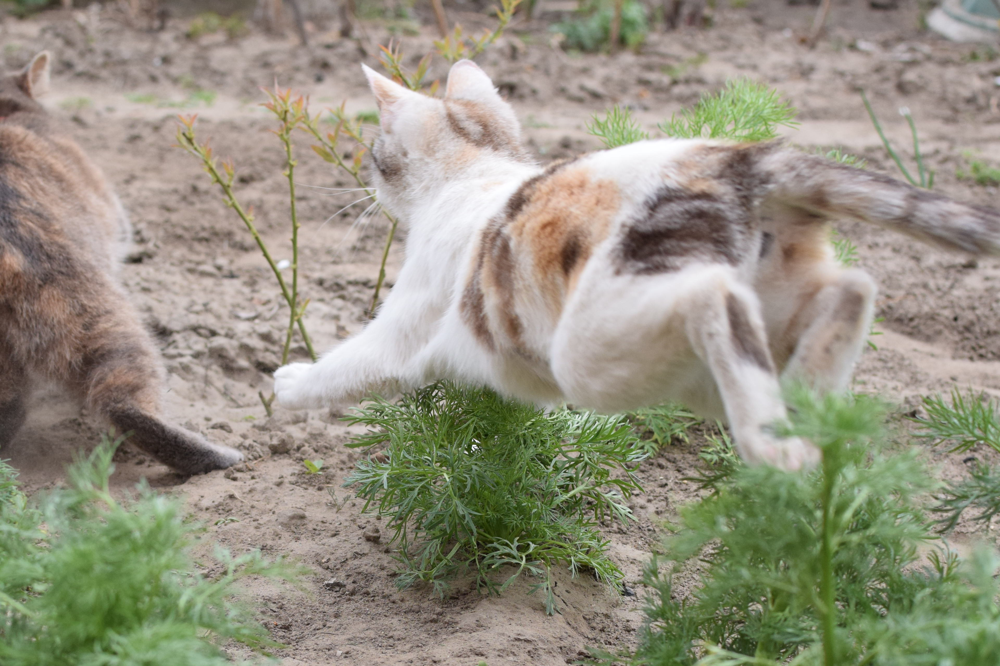
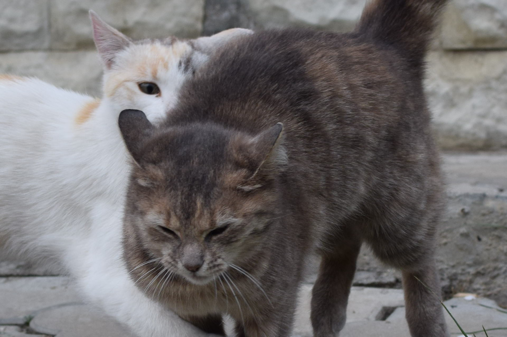
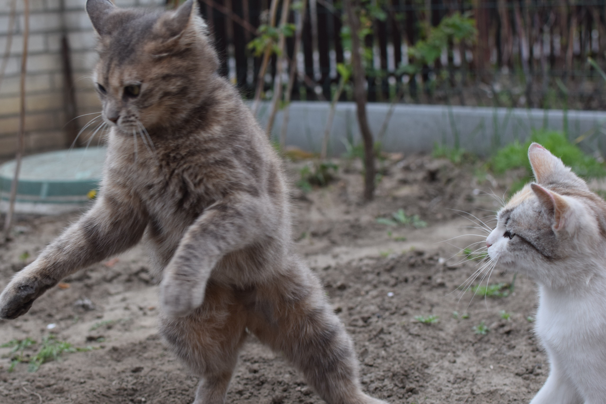
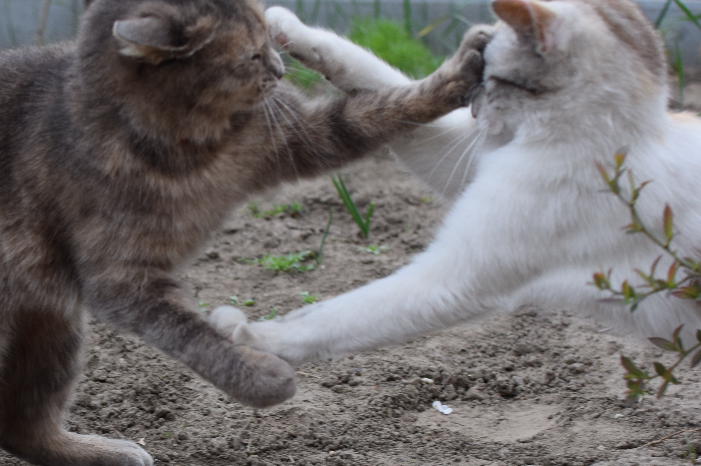
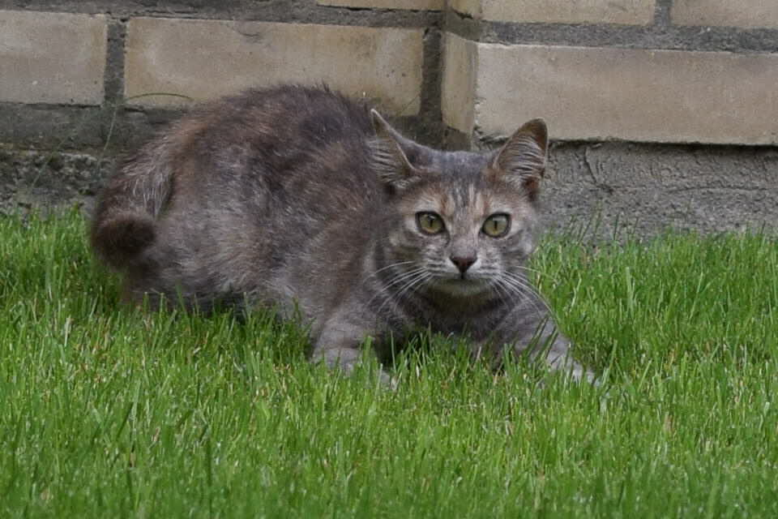
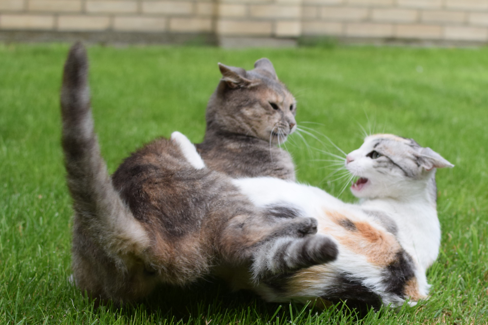
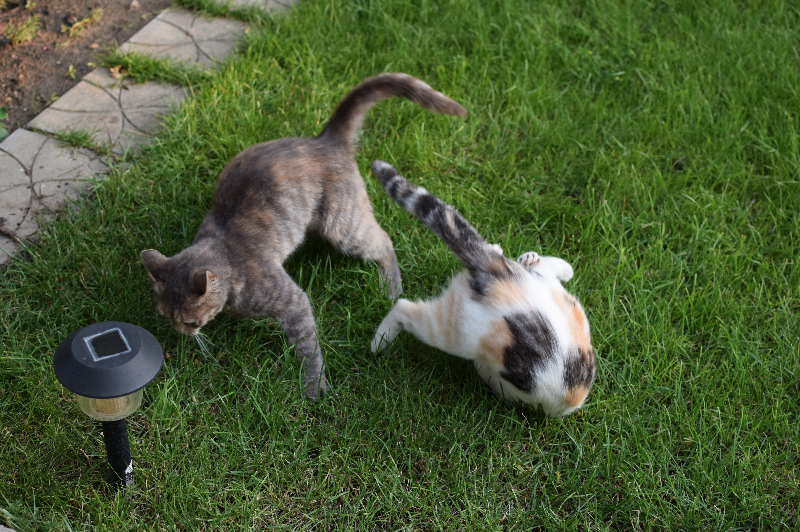
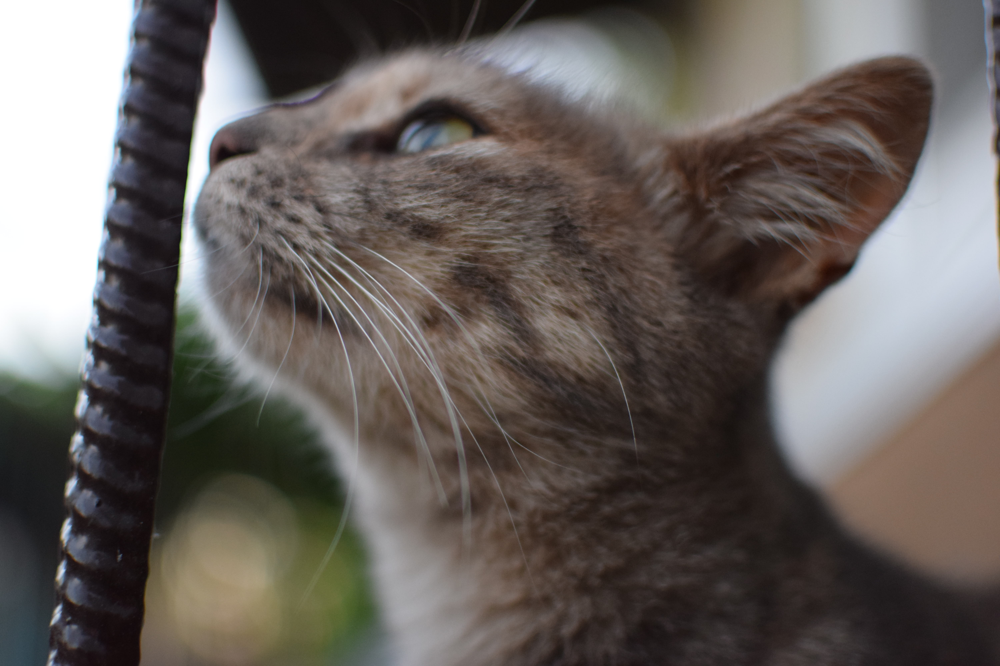
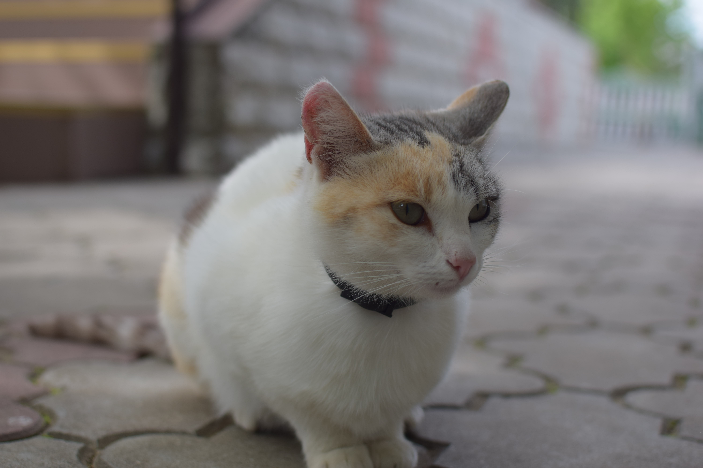
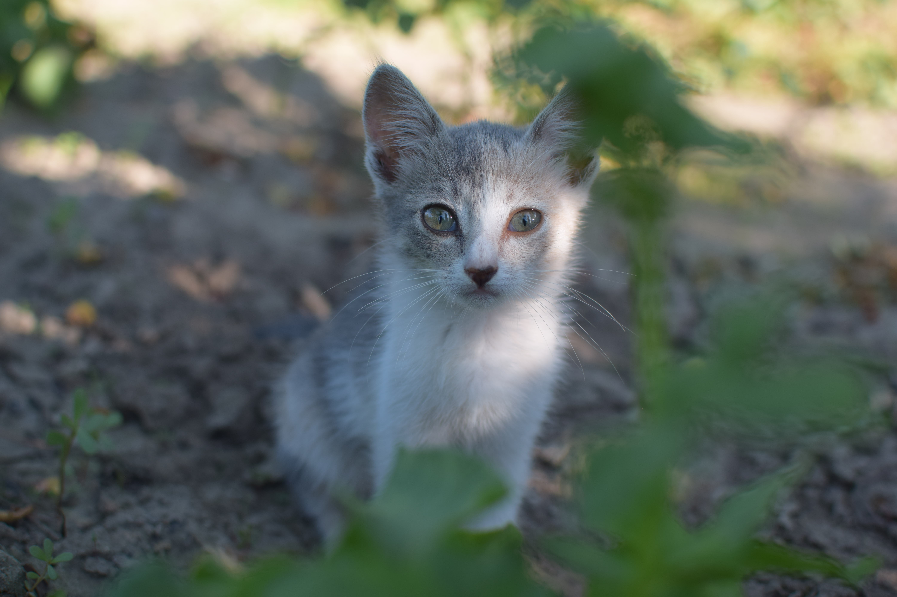
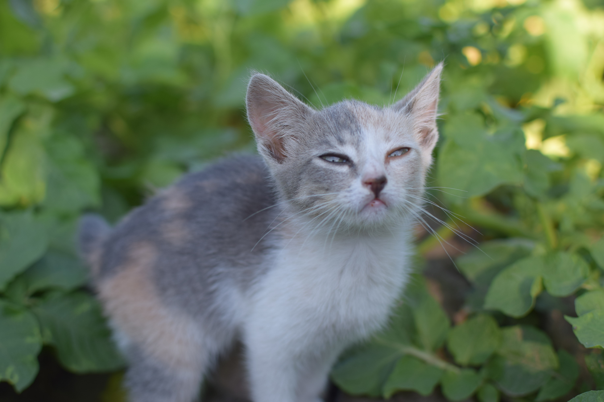
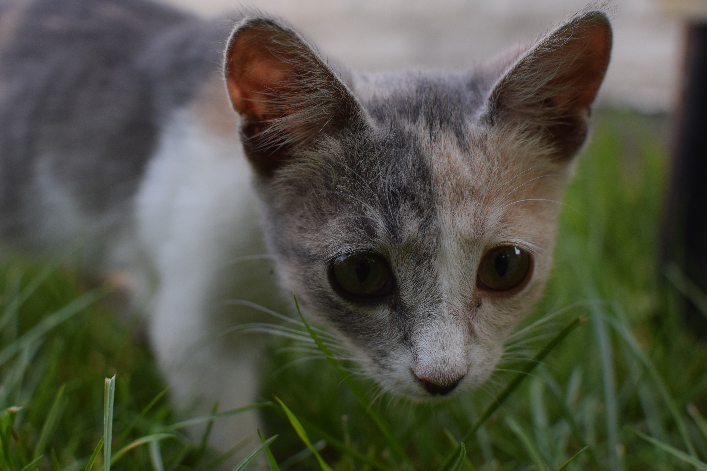